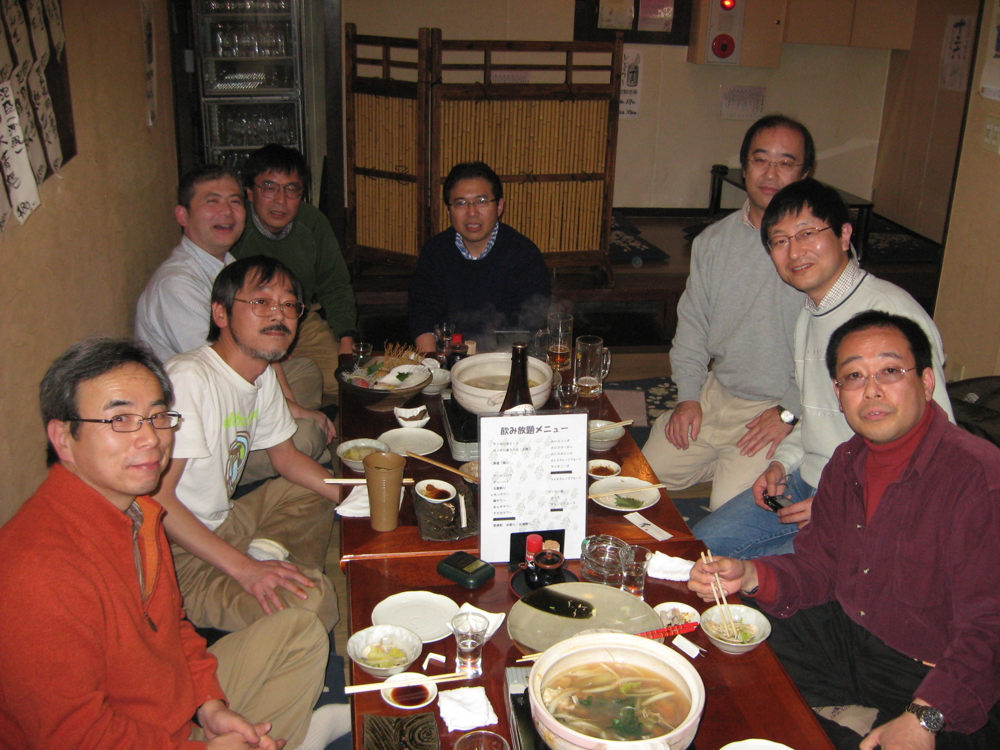
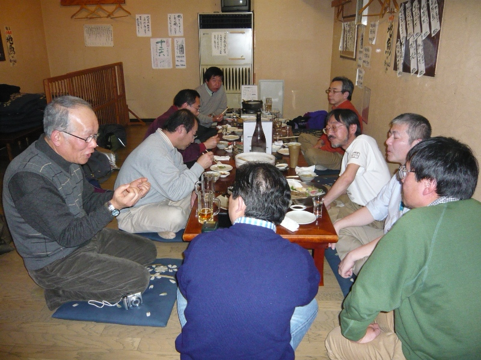
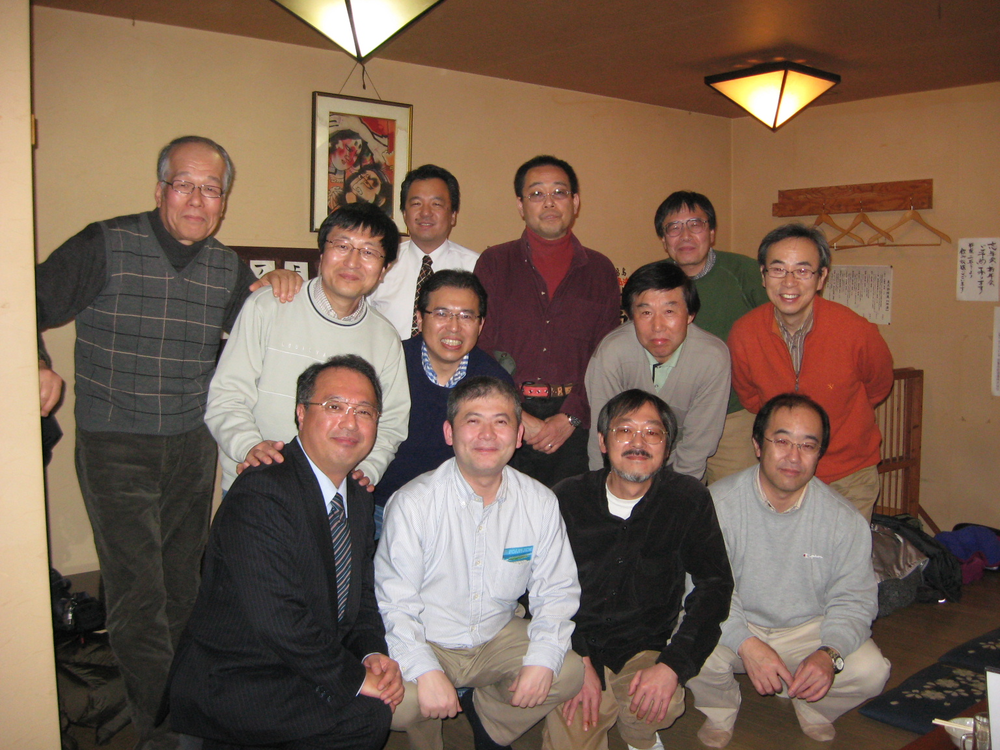
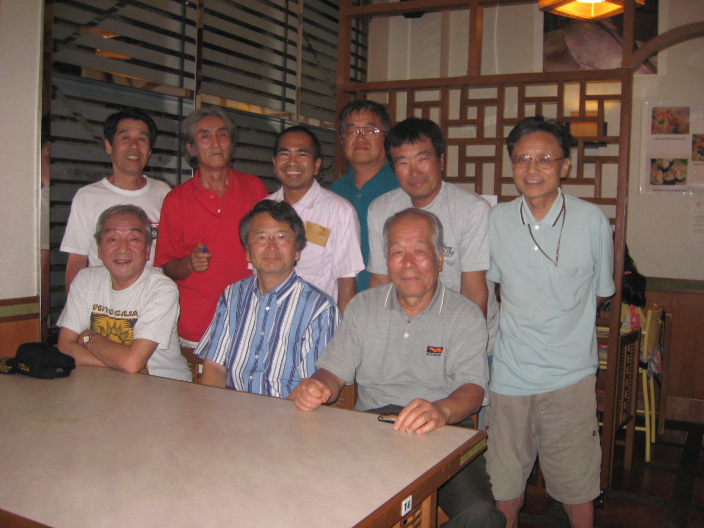

| ||||||||||||||
| 1997 | 1998 | 1999 | 2000 | 2001 | 2002 | 2003 | 2004 | 2005 | 2006 | 2007 | 2008 |
|
◎ 1エリアの50MHz愛好家・2008忘年会開催(2008.12.23) JA1エリアの50MHz愛好家の忘年会が12月23日午後18:00時から上野(御徒町駅前)の「食彩や・魚太郎」で開催された。 今年は期待されたサイクル24の上昇が遅れ、6mのコンデションが悪かったせいもあり、 いまひとつ盛り上がらりにかけ、参加者数も例年を下回ったものの、小数精鋭の"酒豪"？の集まりは時間の経つのも忘れ、 アルコールが回るにつれ、サイクル24の来シーズンの上昇に期待する話題で大いに盛り上がった。 |



◎ 第37回東北6SGミーティング開催のご案内(2008.06.24)
皆様、おはようございます。青森のJA7KHQ鈴木です。
さて、ミーティング会場の予約完了いたしましたので、正式に東北6SGミーティングのご案内です。
日時：平成20年9月13日(土) 受付開始16:00、懇親会18:00～
14日(日) ミーティング 09:00～11:30
場所：国民宿舎おおわに山荘（青森県南津軽郡大鰐町）
会費：13,000円（当日、会場にていただきます）
募集：50名（先着順です）
申込：コールサイン、お名前、連絡先（e-mail、QTH 他）を明記しJA7KHQまで申込みお願いします。
同伴者の有無もお知らせ願います。
〆切：平成20年6月30日(月)
＜追伸＞
To Radio：
JA1CJB,JA1DWQ,JA1DXA,JA1RJU,JA1VOK,JH1WHS,JF1RYU,
JI1NJC,JK1BEY,JL1IHE,JL1PND,JN1JFC,JO1KBC,JO1PSX,
JP1MQZ,JR2HCB,JR3HED,JA5VBH,JA7AGL,JA7AHK,JA7CSS,
JA7EIQ,JA7JWF,JA7KDZ,JA7OWD,JA7QPB,JA7QVI,JA7QMH,
JA7MIT,JA7WSZ,JA7XBA,JH7BKN,JH7BRY,JH7CRL,JH7DHS,
JH7JAM,JH7LVH,JH7MEV,JH7MQU,JH7MSB,JH7VTE,JH7XRZ,
JH7WCF,JR7AIW,JR7HKY,JR7XGL,JE7CAI,JE7GWN,JG7BBO,
JI7WTK,JK7IKU,JK7OSL,JK7TKE,JL7IWF,JL7MYQ,JA8IUB,
JG8KKC,JJ8NNR,JH0RNN
ミーティングご案内は、現在のところ上記宛て先の方へのメールのみであり、まだ他の方へ郵送で
のご案内をしていません。上記の方以外にメール等連絡が取れる方がいらっしゃいましたらメール
転送等によりご案内いただければ幸いです。
・－－－ ・－ －－・・・ －・－ ・・・・ －－・－
〒038-1141
青森県南津軽郡田舎館村大字川部字村元57
鈴木 勇（ISAMU SUZUKI)
e-mail：isamu@seagreen.ocn.ne.jp
suzuki136_ja7khq@docomo.ne.jp
TEL：0172-75-3402 090-7338-9509
|
|
◎ 2008年2月、マニラ在住日本人グループとミーティン(2008.02/20) 2008年2月15-18日にかけてDX0EMEの運用でフィリピンのマニラを訪問(2/14-21日)した際に、 久しぶりにマニラ在住の日本人局のDU1HBC・壷川さんらとのアイボール・ミーティングを楽しみました。 日本人の溜まり場的な日本料理店の"うらしま"は、この日も"日本人会"の集まりがあり、賑わっていました。  後列JA1TGC.榊さん.DU1EV.JF2XGF.DU1IST(JF1IST).JA2KLT 前列左からDU1HBC(JA1HBC).DU1ZV(JA1BRK).JA1RJU |